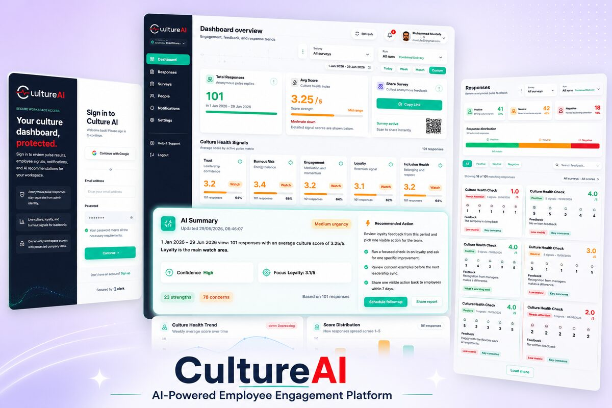
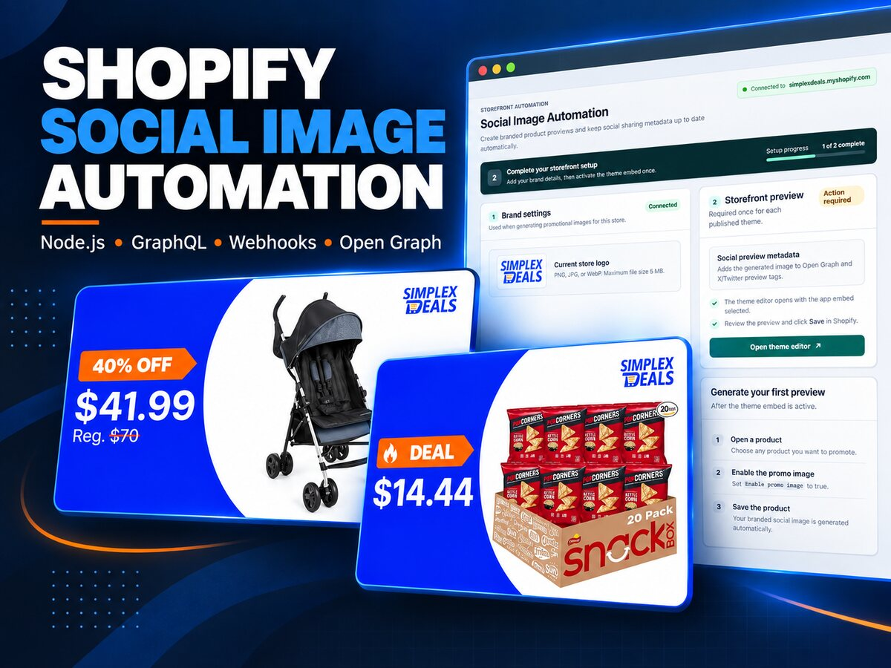
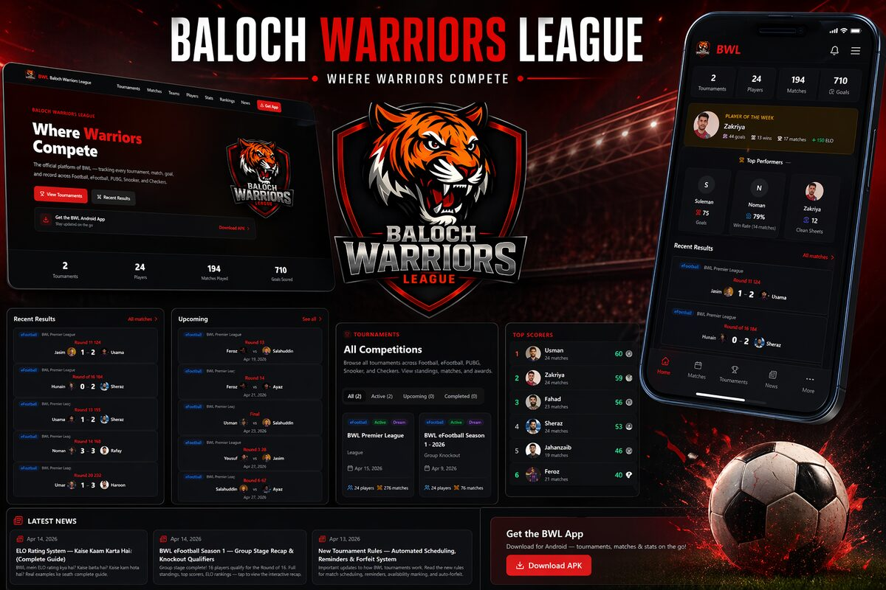

AI SaaS product development
Customer workflows, responsive interfaces, APIs, databases, admin controls and deployment for a complete subscription product.
Global AI SaaS product engineering
I help founders and product teams design, build and improve AI SaaS products where the AI feature, application, data, billing and operations work as one reliable system.
With 10+ years in full-stack engineering, I work directly across React, Next.js, Angular, Node.js, Supabase, PostgreSQL, Stripe and production AI APIs. You speak with the engineer responsible for the architecture and implementation—not an account layer passing requirements between teams.
AI SaaS development services
A useful AI feature still needs secure data access, a clear interface, tenant isolation, billing, failure handling and monitoring. I build those connected parts together so the result can serve real customers rather than remain a disconnected demo.
Customer workflows, responsive interfaces, APIs, databases, admin controls and deployment for a complete subscription product.
Assistants, retrieval, document processing, summaries and tool-using workflows with clear scope, validation and human approval.
Organisation boundaries, roles, row-level data policies, onboarding and audit trails designed for B2B SaaS from the start.
Stripe plans, seats, webhooks, entitlements, trials and usage controls that stay consistent with product access.
Node.js services, webhooks, authentication, third-party systems and background workflows with retries and observability.
Add AI to an established product, modernise Angular or React code, fix performance and strengthen production reliability.
Evidence from real product work
My approach comes from building and maintaining products where permissions, billing, integrations and failure states affect real users. These examples show the range of that work.

AI SaaS platform
A multi-tenant product combining anonymous employee feedback, AI-assisted insights, role-based access, authentication and Stripe billing.
View live product
Commerce automation
A Node.js application using Shopify GraphQL, webhooks, metafields and image processing to publish branded social previews.
View portfolio details
Multi-role SaaS
A Next.js and Supabase sports platform with administrator, coach and team workflows protected by role-aware database access.
View live platformI also work as a senior engineer on an established automotive SaaS product, contributing to production Angular interfaces, complex workflows, debugging and performance. I separate that team contribution from products I built directly, so the scope of my experience stays clear.
Production-ready architecture
The model call is only one part of an AI SaaS product. I treat customer identity, AI behaviour, commercial access and operations as connected production concerns.
01 · Data boundary
The server and database enforce which organisation owns each request. Prompt text never decides access.
02 · AI boundary
AI receives the minimum context and narrow tools required, with evaluation and approval around risky actions.
03 · Commercial boundary
Subscription state, plan limits and AI usage controls remain consistent through verified, idempotent events.
04 · Operational boundary
Trace IDs, cost tracking, rate limits, fallbacks and reversible workflows make behaviour understandable in production.
Direct delivery process
Clarify the customer, workflow, evidence of value and the smallest useful first release.
Plan tenancy, permissions, AI context, tools, billing and failure handling before implementation.
Test working increments against real workflows instead of hiding progress behind status reports.
Monitor usage, cost and failures, then improve the product from production evidence.
Common questions
AI SaaS development can include product architecture, multi-tenant data design, authentication, AI features, secure tool and data access, subscription billing, APIs, dashboards, deployment and production monitoring. The exact scope should follow the product problem rather than a generic feature checklist.
Yes. I can add focused AI capabilities to an existing product, including assistants, document processing, search, summarisation and workflow automation. The work starts by understanding the current application, data and security boundaries so the new feature fits the product instead of becoming a fragile side system.
I use server-side authorization, tenant-aware data access, narrow tools, approval gates for sensitive actions, output validation, usage limits, model routing, monitoring and clear fallbacks. The exact controls depend on what the AI can read, create or change.
Yes. The first release should prove the core customer workflow without creating avoidable architecture debt. I can deliver that initial product and continue through billing, integrations, hardening and production support as real usage provides better evidence.
We define the outcome and risks, agree on clear milestones, review working software regularly and adjust from evidence. You communicate directly with the engineer responsible for the architecture and implementation.
Share the customer problem, current product and target outcome. I’ll help turn them into a practical architecture and delivery plan.